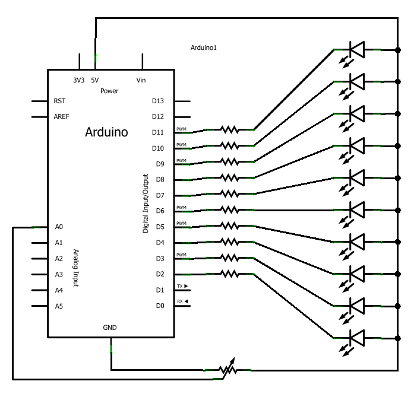

On commence cette partie sur l’analogique sur les chapeaux de roues en réalisant tout de suite notre premier TP. Ce dernier n’est pas très compliqué, à condition que vous ayez suivi correctement le tuto et que vous n’ayez pas oublié les bases des parties précédentes !

Sommaire
Consigne
Vu-mètre, ça vous parle ?
Dans ce TP, nous allons réaliser un vu-mètre . Même si le nom ne vous dit rien, je suis sur que vous en avez déjà rencontré. Par exemple, sur une chaîne hi-fi ou sur une table de mixage on voit souvent des loupiotes s’allumer en fonction du volume de la note joué. Et bien c’est ça un vu-mètre, c’est un système d’affichage sur plusieurs LED, disposées en ligne, qui permettent d’avoir un retour visuel sur une information analogique (dans l’exemple, ce sera le volume).
Objectif
Pour l’exercice, nous allons réaliser la visualisation d’une tension. Cette dernière sera donnée par un potentiomètre et sera affichée sur 10 LED. Lorsque le potentiomètre sera à 0V, on allumera 0 LED, puis lorsqu’il sera au maximum on les allumera toutes. Pour les valeurs comprises entre 0 et 5V, elles devront allumer les LED proportionnellement. Voilà, ce n’est pas plus compliqué que ça. Comme d’habitude voici une petite vidéo vous montrant le résultat attendu et bien entendu …
BON COURAGE !
Là encore, le montage sans code est disponible dans un simulateur avant la correction du programme.
Correction !
J’espère que tout c’est bien passé pour vous et que l’affichage cartonne ! Voici maintenant venu l’heure de la correction, en espérant que vous n’en aurez pas besoin et que vous la consulterez juste pour votre culture.
 Comme d’habitude nous allons commencer par voir le schéma puis ensuite nous étudierons le code.
Comme d’habitude nous allons commencer par voir le schéma puis ensuite nous étudierons le code.
Schéma électronique
Le schéma n’est pas très difficile. Nous allons retrouver 10 LEDs et leurs résistances de limitations de courant branchées sur 10 broches de l’Arduino (histoire d’être original nous utiliserons 2 à 11). Ensuite, nous brancherons un potentiomètre entre le +5V et la masse. Sa broche centrale, qui donne la tension variable sera connectée à l’entrée analogique 0 de l’Arduino. Voici le schéma obtenu :

Voici le montage sans code pour ceux qui souhaite juste faire le programme.
Le code
Là encore vous commencez à avoir l’habitude, nous allons d’abord étudier le code des variables globales (pourquoi elles existent ?), voir la fonction setup(), puis enfin étudier la boucle principale et les fonctions annexes utilisées.
Variables globales et setup
Dans ce TP nous utilisons 10 LEDs, ce qui représente autant de sorties sur la carte Arduino donc autant de "const int …" à écrire. Afin de ne pas se fatiguer de trop, nous allons déclarer un tableau de "const int" plutôt que de copier/coller 10 fois la même ligne. Ensuite, nous allons déclarer la broche analogique sur laquelle sera branché le potentiomètre. Enfin, nous déclarons une variable pour stocker la tension mesurée sur le potentiomètre. Et c’est tout pour les déclarations !
// Déclaration et remplissage du tableau...
// ...représentant les broches des LEDs
const int leds[10] = {2,3,4,5,6,7,8,9,10,11};
// le potentiomètre sera branché sur la broche analogique 0
const int potar = 0;
// variable stockant la tension mesurée
int tension = 0;
Une fois que l’on à fait ces déclarations, il ne nous reste plus qu’à déclarer les broches en sortie et à les mettre à l’état HAUT pour éteindre les LEDs. Pour faire cela de manière simple (au lieu de 10 copier/coller), nous allons utiliser une boucle for pour effectuer l’opérations 10 fois (afin d’utiliser la puissance du tableau).
void setup()
{
int i = 0;
for(i = 0; i < 10; i++)
{
// déclaration de la broche en sortie
pinMode(leds[i], OUTPUT);
// mise à l'état haut
digitalWrite(leds[i], HIGH);
}
}
setup
Boucle principale
Alors là vous allez peut-être être surpris mais nous allons avoir une fonction principale super light. En effet, elle ne va effectuer que deux opérations : Mesurer la tension du potentiomètre, puis appeler une fonction d’affichage pour faire le rendu visuel de cette tension. Voici ces deux lignes de code :
void loop()
{
// on récupère la valeur de la tension du potentiomètre
tension = analogRead(potar);
// et on affiche sur les LEDs cette tension
afficher(tension);
}
loop
Encore plus fort, la même écriture mais en une seule ligne !
void loop()
{
// la même chose qu'avant même en une seule ligne !
afficher(analogRead(potar));
}
Fonction d’affichage
Alors certes la fonction principale est très légère, mais ce n’est pas une raison pour ne pas avoir un peu de code autre part. En effet, le gros du traitement va se faire dans la fonction d’affichage, qui, comme son nom et ses arguments l’indiquent, va servir à afficher sur les LEDs la tension mesurée. Le but de cette dernière sera d’allumer les LEDs de manière proportionnelle à la tension mesuré. Par exemple, si la tension mesuré vaut 2,5V (sur 5V max) on allumera 5 LEDs (sur 10). Si la tension vaut 5V, on les allumera toutes. Je vais maintenant vous montrer une astuce toute simple qui va tirer pleinement parti du tableau de broches créé tout au début. Tout d’abord, mettons-nous d’accord. Lorsque l’on fait une mesure analogique, la valeur retournée est comprise entre 0 et 1023. Ce que je vous propose, c’est donc d’allumer une LED par tranche de 100 unités. Par exemple, si la valeur est comprise entre 0 et 100, une seule LED est allumée. Ensuite, entre 100 et 200, on allume une LED supplémentaire, etc. Pour une valeur entre 700 et 800 on allumera donc… 8 LEDs, bravo à ceux qui suivent ! :s Ce comportement va donc s’écrire simplement avec une boucle for, qui va incrémenter une variable i de 0 à 10. Dans cette boucle, nous allons tester si la valeur (image de la tension) est inférieure à i multiplier par 100 (ce qui représentera nos différents pas). Si le test vaut VRAI, on allume la LED i, sinon on l’éteint. Démonstration :
void afficher(int valeur)
{
int i;
for(i=0; i < 10; i++)
{
if(valeur > (i*100))
digitalWrite(leds[i], LOW); // on allume la LED
else
digitalWrite(leds[i], HIGH); // ou on éteint la LED
}
}
Et voici la correction interactive :
Amélioration
Si jamais vous avez trouvé l’exercice trop facile, pourquoi ne pas faire un peu de zèle en réalisant carrément un mini-voltmètre en affichant sur deux afficheurs 7 segments une tension mesurée (un afficheur pour les Volts et un autre pour la première décimale) ? Ceci n’est qu’une idée d’amélioration, la solution sera donnée, commentée, mais pas expliquée en détail car vous devriez maintenant avoir tout le savoir pour la comprendre. L’exercice est juste là pour vous entraîner et pour vous inspirer avec un nouveau montage.
// les broches du décodeur 7 segments
const int bit_A = 2;
const int bit_B = 3;
const int bit_C = 4;
const int bit_D = 5;
// les broches des transistors pour l'afficheur des dizaines et des unités
const int alim_dizaine = 6;
const int alim_unite = 7;
// la broche du potar
const int potar = 0;
float tension = 0.0; // tension mise en forme
int val = 0; // tension brute lue (0 à 1023)
bool afficheur = false;
long temps;
void setup()
{
// Les broches sont toutes des sorties (sauf les boutons)
pinMode(bit_A, OUTPUT);
pinMode(bit_B, OUTPUT);
pinMode(bit_C, OUTPUT);
pinMode(bit_D, OUTPUT);
pinMode(alim_dizaine, OUTPUT);
pinMode(alim_unite, OUTPUT);
// Les broches sont toutes mise à l'état bas (sauf led rouge éteinte)
digitalWrite(bit_A, LOW);
digitalWrite(bit_B, LOW);
digitalWrite(bit_C, LOW);
digitalWrite(bit_D, LOW);
digitalWrite(alim_dizaine, LOW);
digitalWrite(alim_unite, LOW);
temps = millis(); // enregistre "l'heure"
}
void loop()
{
// on fait la lecture analogique
val = analogRead(potar);
// mise en forme de la valeur lue
tension = val * 5; // simple regle de trois pour la conversion ( *5/1023)
tension = tension / 1023;
// à ce stade on a une valeur de type 3.452 Volts...
// que l'on va multiplier par 10 pour afficher avec les vieilles fonctions
tension = tension*10;
// si ca fait plus de 10 ms qu'on affiche, on change de 7 segments
if((millis() - temps) > 10)
{
// on inverse la valeur de "afficheur"
// pourchanger d'afficheur (unité ou dizaine)
afficheur = !afficheur;
// on affiche
afficher_nombre(tension, afficheur);
temps = millis(); // on met à jour le temps
}
}
// fonction permettant d'afficher un nombre
void afficher_nombre(float nombre, bool afficheur)
{
long temps;
char unite = 0, dizaine = 0;
if(nombre > 9)
dizaine = nombre / 10; // on recupere les dizaines
unite = nombre - (dizaine*10); // on recupere les unités
if(afficheur)
{
// on affiche les dizaines
digitalWrite(alim_unite, LOW);
digitalWrite(alim_dizaine, HIGH);
afficher(dizaine);
}
else
{
// on affiche les unités
digitalWrite(alim_dizaine, LOW);
digitalWrite(alim_unite, HIGH);
afficher(unite);
}
}
// fonction écriveant sur un seul afficheur
void afficher(char chiffre)
{
// on commence par écrire 0, donc tout à l'état bas
digitalWrite(bit_A, LOW);
digitalWrite(bit_B, LOW);
digitalWrite(bit_C, LOW);
digitalWrite(bit_D, LOW);
if(chiffre >= 8)
{
digitalWrite(bit_D, HIGH);
chiffre = chiffre - 8;
}
if(chiffre >= 4)
{
digitalWrite(bit_C, HIGH);
chiffre = chiffre - 4;
}
if(chiffre >= 2)
{
digitalWrite(bit_B, HIGH);
chiffre = chiffre - 2;
}
if(chiffre >= 1)
{
digitalWrite(bit_A, HIGH);
chiffre = chiffre - 1;
}
// Et voilà !!
}
Vous savez maintenant comment utiliser et afficher des valeurs analogiques externes à la carte Arduino. En approfondissant vos recherches et vos expérimentations, vous pourrez certainement faire pas mal de choses telles qu’un robot en associant des capteurs et des actionneurs à la carte, des appareils de mesures (Voltmètre, Ampèremètre, Oscilloscope, etc.). Je compte sur vous pour créer par vous-même !
Direction, le prochain chapitre où vous découvrirez comment faire une conversion numérique -> analogique…